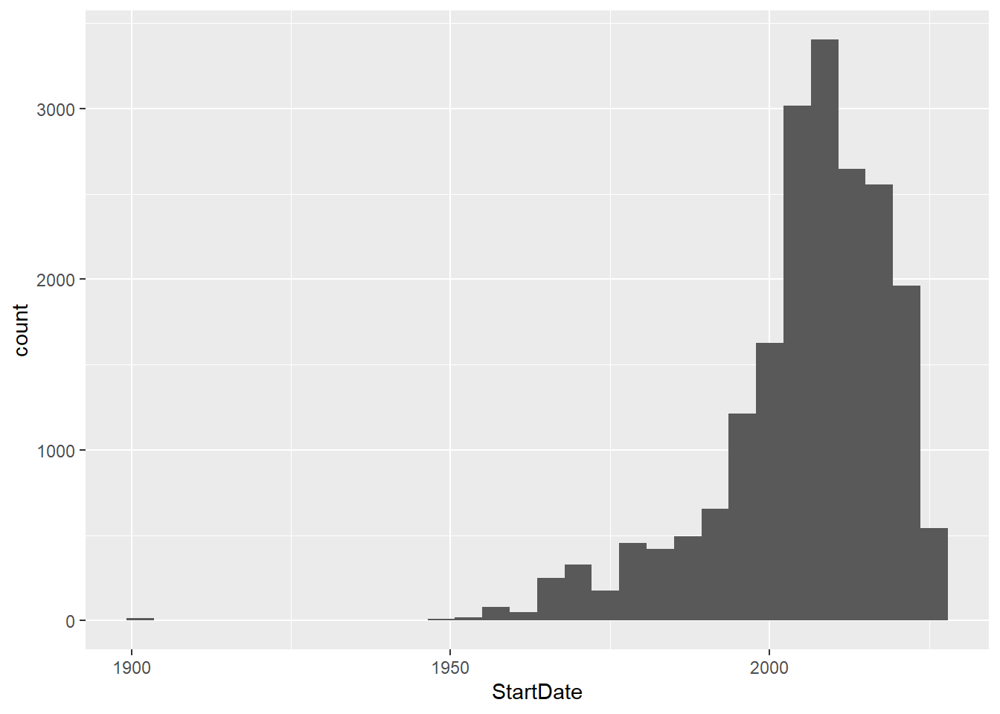
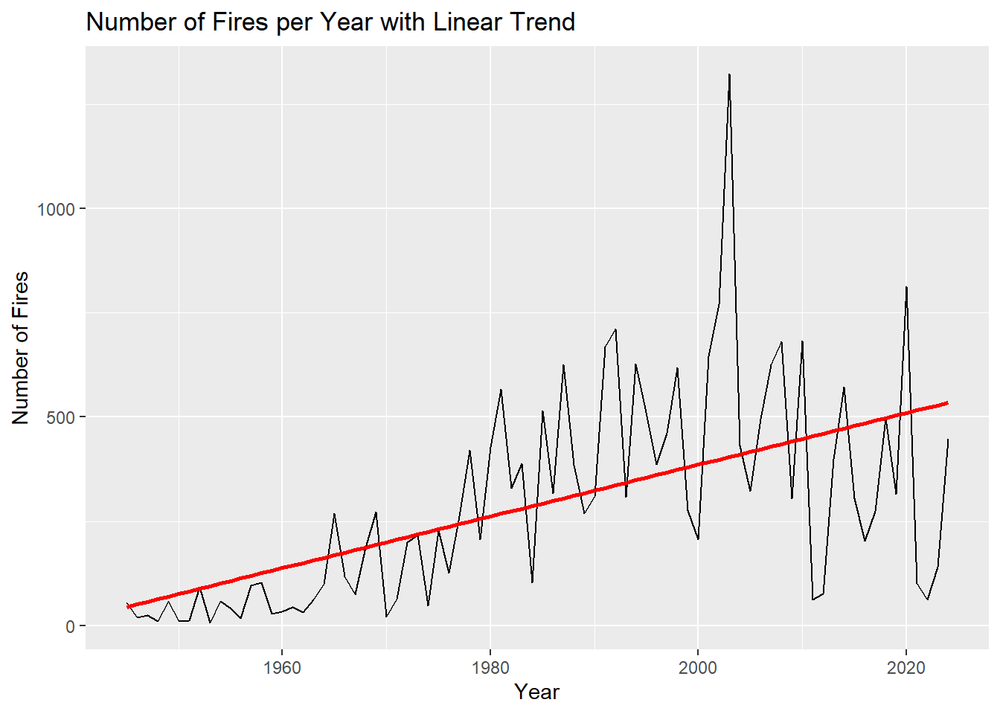
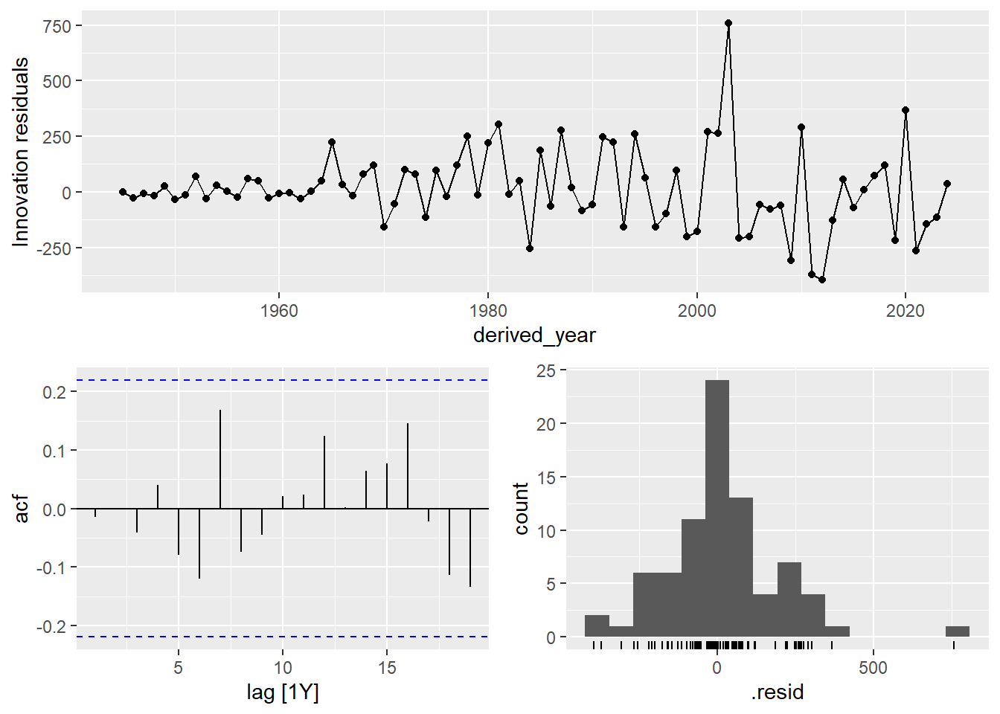
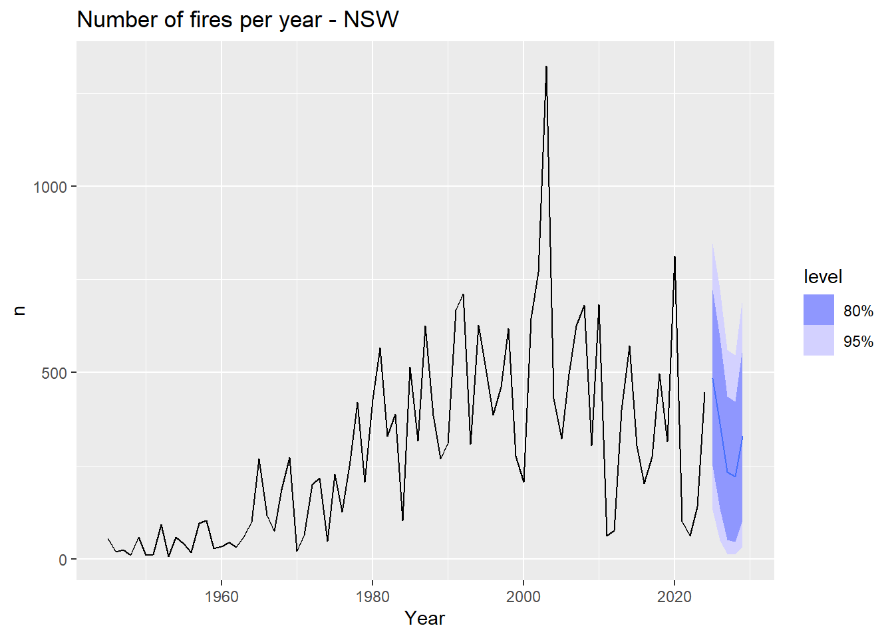

Statistical analysis, modelling and initial forecasting
This paper will aim at answering the question:
Is there a statistically significant increase in the incidence (nr. fires/year) and size of fires in New South Wales, Australia, since bushfire data started being recorded?
The datasets are in Shapefile format (.shp), which is a simple, nontopological format for storing the geometric location and attribute information of geographic features. Geographic features in a shapefile can be represented by points, lines, or polygons (areas), which is our case for the size of area burnt each year.
Now, the dataset obtained had to be converted into a format that can be read by the R programming language.
15,850 missing Start Dates out of a total of 35,776 records. That is too much.
A histogram shows that, not surpringingly, there is more are more data recorded in recent years versus the 1st half of the 20th century:

And so:
in order to use as much data as possible, we are going to obtain the fire dates from the ‘LABEL’ variable. This will also allow us to remove all of the ‘prescribed’ burns, since those are not to be taken into account to answer our question.
it makes sense only to use data from 1945 onwards -since pretty much there is no data available prior to this year
BUT….by using the fire dates from the ‘LABEL’ variable, we won’t be able to factor in the yearly seasonality of the bushfire data -as this variable only specifies the YEAR of the fire. Then again, if we had wanted to use the original Start Date data, we wouldn’t have been able to factor in yearly seasonality anyway (precisely due to missing data in this variable).
We plot those 2 new variables that we have created (‘Total_Area_burned_year’ and ’Nr_fires_year”) to learn about them:
And so we can appreciate that the ‘Total Area burnt’ timeseries data has no trend. The seasonal component cannot be determined (as we are only using yearly summarised data) -but there are what could be cycles every 4-5 years (something that has been described previously - INSERT CITAS)
The ‘Nr. fires per year’ data shows a slight upward trend (again, seasonality cannot be determined).
Which are the statistical tests that can be used to determine if an increase in the data trend is statistically significant?
We will calculate this on the ‘Nr. of fires’ timeseries.
Augmented Dickey-Fuller (ADF) Test The ADF test checks for the presence of a unit root in the time series, which can indicate if the series is non-stationary and has a trend.
Mann-Kendall Trend Test The Mann-Kendall test is a non-parametric test used to identify trends in a time series without specifying whether the trend is linear or non-linear. It can be particularly useful for environmental and climate data.
Nr_fires_year_ts <-ts(Nr_fires_year$n, start =min(Nr_fires_year$derived_year), frequency =1)# ADF Testadf_test <-adf.test(Nr_fires_year_ts)adf_test
Augmented Dickey-Fuller Test
data: Nr_fires_year_ts
Dickey-Fuller = -1.612, Lag order = 4, p-value = 0.7345
alternative hypothesis: stationary
p > 0.05 , hence the ‘Nr. of fires’ timeseries data is non-stationary (there is a trend)
p < 0.05 -meaning we reject the null, so there is sufficient evidence to say there is a trend.
If we attempt linear regression, we obtain a statistically significant equation as well:
lm_model <-lm(n ~ derived_year, data = Nr_fires_year)summary(lm_model)
Call:
lm(formula = n ~ derived_year, data = Nr_fires_year)
Residuals:
Min 1Q Median 3Q Max
-460.18 -103.18 -27.14 95.84 918.50
Coefficients:
Estimate Std. Error t value Pr(>|t|)
(Intercept) -12000.810 2012.611 -5.963 6.82e-08 ***
derived_year 6.193 1.014 6.107 3.71e-08 ***
---
Signif. codes: 0 '***' 0.001 '**' 0.01 '*' 0.05 '.' 0.1 ' ' 1
Residual standard error: 209.5 on 78 degrees of freedom
Multiple R-squared: 0.3235, Adjusted R-squared: 0.3148
F-statistic: 37.3 on 1 and 78 DF, p-value: 3.71e-08
# Plot the trendggplot(Nr_fires_year, aes(x = derived_year, y = n)) +geom_line() +geom_smooth(method ="lm", se =FALSE, color ="red") +labs(title ="Number of Fires per Year with Linear Trend", x ="Year", y ="Number of Fires")

We have to acknowledge though, that this is a very simple linear model, and that it only explains roughly a quarter of the data. But still, we have yet another method that is telling us that there is statistical significance in the trend.
Q#2: determine if the number and size of fires in the period 1945-1957 are statistically significantly different from the period 1980-2023?
To answer this question, the following approach is used:
Data Preparation: split the data into two subsets: 1950-1955 and 1980-2023.
For each period, calculate the number of fires per year and the total area affected by fires each year.
Calculate the mean, median, standard deviation, and variance for the number of fires per year and the total area affected by fires per year for both periods.
Check if the data for each period follows a normal distribution using the Shapiro-Wilk test or the Kolmogorov-Smirnov test.
Variance Test: Compare the variances of the two periods using Levene’s Test or F-test to check for homogeneity of variances.
Statistical Tests for Mean Comparison: If the data is normally distributed and variances are equal, use the Student’s t-test (independent t-test) to compare the means. If the data is normally distributed but variances are not equal, use Welch’s t-test. If the data is not normally distributed, use the Wilcoxon Rank Sum test (a non-parametric test).
Code
# Filter data for the two periodsperiod1 <- NSW_fire_history2 %>%filter(derived_year >=1945& derived_year <=1957)period2 <- NSW_fire_history2 %>%filter(derived_year >1980& derived_year <=2023)# Calculate number of fires and total area affected per year for both periodsfires_per_year_p1 <- period1 %>%group_by(derived_year) %>%summarize(count =n(), total_area =sum(AreaHa, na.rm =TRUE))fires_per_year_p2 <- period2 %>%group_by(derived_year) %>%summarize(count =n(), total_area =sum(AreaHa, na.rm =TRUE))# Descriptive statisticsdesc_p1_fires <-summary(fires_per_year_p1$count)desc_p2_fires <-summary(fires_per_year_p2$count)desc_p1_area <-summary(fires_per_year_p1$total_area)desc_p2_area <-summary(fires_per_year_p2$total_area)print("Period 1: 1945 to 1957")
[1] "Period 1: 1945 to 1957"
Code
desc_p1_fires
Min. 1st Qu. Median Mean 3rd Qu. Max.
8.00 13.00 25.00 39.08 59.00 97.00
Code
print("Period 2: 1980 to 2023")
[1] "Period 2: 1980 to 2023"
Code
desc_p2_fires
Min. 1st Qu. Median Mean 3rd Qu. Max.
62.0 290.0 389.0 434.7 621.5 1323.0
Above are displayed the summary stats for ‘# of fires’ of the 2 periods that we selected for our question.
Now, let’s see if the data in the 2 selected periods is normally distributed or not:
Wilcoxon rank sum test with continuity correction
data: fires_per_year_p1$count and fires_per_year_p2$count
W = 6, p-value = 1.17e-07
alternative hypothesis: true location shift is not equal to 0
stest_area
Wilcoxon rank sum exact test
data: fires_per_year_p1$total_area and fires_per_year_p2$total_area
W = 70, p-value = 1.232e-05
alternative hypothesis: true location shift is not equal to 0
In the Wilcoxon rank sum test, p-values are not strictly defined as a measure of the effect size. If the p-value is lower the significance level (usually 0.05) then we can say that we have statistically significant evidences to reject the null hypothesis -and thus to accept that the data are from different populations (and so, there is a statistically significant difference between the 1945-1957 data and the 1980-2023 data!).
FORECASTING
There are numerous methods used for forecasting. And lately, the advent of machine learning techniques has widened the forecasting tools and possibilities exponentially. A bibliographic research was performed, and after consideration, the ARIMA/SARIMA method was chosen. Machine learning methods were discarded in this instance, as ARIMA/SARIMA has recently been found to perform better in environmental data (CITAA!!)
The basis for forecasting via ARIMA/SARIMA using R was taken from the excellent book “Forecasting: principles and practice” 3rd edition, by Rob Hyndman and George Athanosopoulos (click for the URL)
ARIMA/SARIMA models
An autoregressive integrated moving average (ARIMA) model is a form of regression analysis that gauges the strength of one dependent variable relative to other changing variables. The model’s goal is to predict future values by examining the differences between values in the series instead of through actual values.
An ARIMA model can be understood by outlining each of its components as follows:
Autoregression (AR): refers to a model that shows a changing variable that regresses on its own lagged, or prior, values. In other words, it predicts future values based on past values.
Integrated (I): represents the differencing of raw observations to allow the time series to become stationary (i.e., data values are replaced by the difference between the data values and the previous values).
Moving average (MA): incorporates the dependency between an observation and a residual error from a moving average model applied to lagged observations.
Since we’ve had to dispense seasonal variation data in our 2 timeseries (remember we could not use the ‘Start Date’ variable information due to the high number of missing datapoints, hence we could only use aggregated yearly data), the method we will use is ARIMA.
For this, we use the ‘fabletools’ and ‘feasts’ R packages, created by XXXXXXXXXXXXXXXXXXXXXXXXXX
And in this case, we will let R choose the best ARIMA model, using the most stringent STEPWISE feature (which instructs R to iterate between various different ARIMA models, until the best fit is found).
# A mable: 1 x 2
# Key: Model name [1]
`Model name` Orders
<chr> <model>
1 auto <ARIMA(3,1,3)>
The model chosen is ARIMA 3,1,3 (autoregression on the 3rd lag, 1 order of differencing and a moving average window of order 3)
We plot the residuals to check if they are random:
Code
fit |>select(auto) |>gg_tsresiduals()

They are, so we can then proceed to forecast 5 years ahead:
fit |>forecast(h=5) |>mutate(n = distributional::dist_truncated(n, 0)) %>%filter(.model=='auto') |>autoplot(Nr_fires_year_ts) +labs(title="Number of fires per year - NSW", x="Year")

The forecast obtained is decent (for lack of another descriptor). The confidence intervals are far wider than we would like them to be, but as a first attempt the forecast is acceptable.
The interactive plot below will let you hoover over the actual precise predicted values (though the R command for it currently does not allow the confidence intervals to be displayed).
Code
fitplot <- fit |>forecast(h=5) |>mutate(n = distributional::dist_truncated(n, 0)) %>%filter(.model=='auto') |>autoplot(Nr_fires_year_ts) +labs(title="Number of fires per year - NSW", x="Year")ggplotly(fitplot)